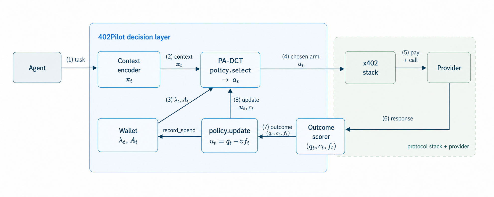

Decision pathtask → x_t → λ_norm → a_t → x402 pay+call → provider
Learning pathresponse/cost/failure → scorer → utility → posterior(q,c) → next round
402Pilot Interactive Explainer
A decision layer for agent micropayment markets: learn which provider is worth paying before x402 executes the call.
System Architecture
The diagram is the paper figure. Use the path controls to highlight decision flow or learning flow.

Provider Market
Scenario Replay
Round Microscope
Experiment Results
Ablation